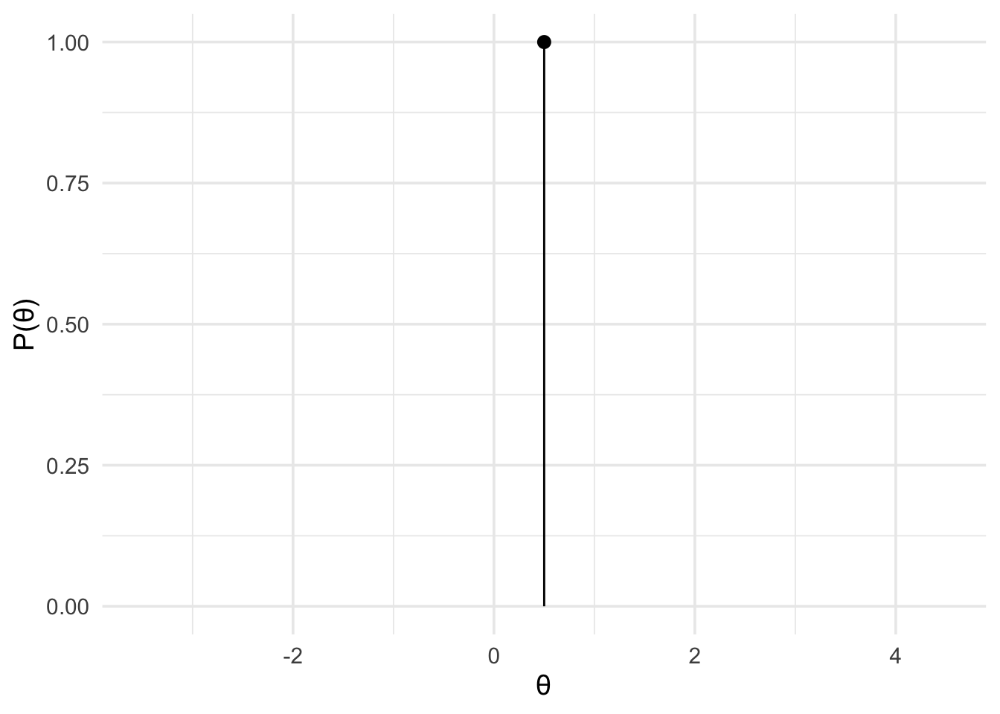

Chapter 4 The Bayes factor

The primary aim of this course is to learn how to compute and interpret Bayes factors. But what is a Bayes factor? Well it turns out that we’ve already computed a Bayes factor. The Bayes factor is just the ratio that we computed in the previous section. The Bayes factor is a metric that compares the relative probability of obtaining our data under one model compared to another.
When we computed these ratios, the Bayes factor, in the previous section, it was made up of two ingredients.
We had our likelihood that related parameter values to our data. It told us the relative probability of obtaining our data under different values of the the parameter (the coin bias)
We had priors, which assigned different probabilities to the different values of the parameter. These served as our hypotheses about the parameter (the coin bias), and they served as the weights for our average of the likelihood. We had one prior for each hypothesis.
To perform the computation itself, we multiplied the prior by the likelihood, and took the weighted average, by taking the integral. Mathematically, we did the following:
\[\mathcal{M}_H = \int_{\theta\in\Theta_H}\mathcal{L}_H(\theta|\mathbf{y})p(\theta)d\theta\]
We did this for each hypothesis (e.g., \(\mathcal{M}_0\) and \(\mathcal{M}_1\)), and then took the ratio \(\frac{\mathcal{M}_0}{\mathcal{M}_1}\). And this ratio was the Bayes factor.
\[\mathrm{BF}_{01} = \frac{\mathcal{M}_0}{\mathcal{M_1}}\]
4.1 Computing Bayes factors with bayesplay
To actually compute Bayes factors we’re going to use an R package called
bayesplay. The bayesplay package allows you to specify likelihoods and
priors, and to perform some operations on them. The operations, described above.
Let’s step through some R to see how we would actually do it:
First, we specify the likelihood. We’ll specify a likelihood of the binomial family. It requires 2 inputs. The number of heads, and the number of flips.
data_model <- likelihood(family = "binomial", successes = 8, trials = 10)Second, we’ll specify the two priors. For the first, we’ll set a point prior at 0.5 to represent our fair coin hypothesis.
fair_coin <- prior(family = "point", point = 0.5)Next, we’ll use a uniform prior to represent equal weights for all values between 0 and 1. There’s two ways we can do this. First, we can use the uniform family.
unfair_coin <- prior(family = "uniform", min = 0, max = 1)But we can also use the beta family. The result will be the same in either case.
unfair_coin <- prior(family = "beta", alpha = 1, beta = 1)Since we’ve been visualizing everything so far, we can also visualise the
likelihood and priors we’ve just defined. To do this, we just use the plot()
function.
plot(data_model) +
theme_minimal(14)plot(fair_coin) +
theme_minimal(14)
plot(unfair_coin) +
theme_minimal(14)The next step was to multiply the likelihood by the prior. We’ll do this for our likelihood and each of the prior.
m0 <- data_model * fair_coin
m1 <- data_model * unfair_coinPlotting these isn’t super informative, but we can do it anyway.
plot(m0) +
theme_minimal(14)
plot(m1) +
theme_minimal(14)
The next step is to work our the area under each of these curves. That is, work
out that integral. To do this, we just use the integral() function.
int_m0 <- integral(m0)
int_m1 <- integral(m1)And finally, we just take the ratio of these two values to get the Bayes factor.
bf <- int_m1 / int_m0The bayes factor is 2.069
And that’s all there is to it.
However, we can do a little more. In the previous section we saw plots that showed
the predictions of each model and highlighted our specific observation. We can
also generate these easily with bayesplay. We simply use the visual_compare()
function, and give the two models (the likelihood \(\times\) the prior) as inputs.
visual_compare(m1, m0) +
theme_minimal(14)4.2 Computing Bayes factors with Bayesplay-Web
If you’re not super proficient with R, then you can use the Bayesplay-Web
app to compute Bayes factors. The Bayesplay-Web will even generate the R
code for you. To access the web-app go to
bayesplay.mindsci.net.
Below is an image of the Bayesplay-Web interface.


Then we define the prior for unfair coin.

And then the prior for the fair coin.

And then we click Calculate to get our answer.

The BF10 value shows the evidence for the alternative model over the null model. The BF01 value is the inverse, and shows the evidence for the null model over the alternative model”
Toggling the Show R Code button will show you the R code you need to compute
the model.

And finally, clicking on View advanced output will take you to a new screen where you can view some additional output including the model predictions.

4.3 Moving beyond coin flips
In the next section, we’ll learn how to calculate Bayes factors with different kinds of likelihoods for different kinds of data that we might encounter. We’ll also go in to more detail about different kinds of priors we might want to use and why we might want to use them.
In the meantime, you can play around with the web-app and have a look
through the documentation for the R package (available at
bayesplay.github.io/bayesplay/).
You’ll have to submit R code for the assessment (either written yourself or
generated with the web-app) so it pays to familiarise yourself with it.
## Warning: package 'magrittr' was built under R version 4.1.2